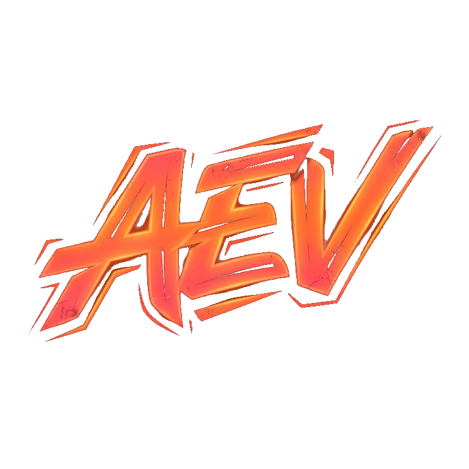
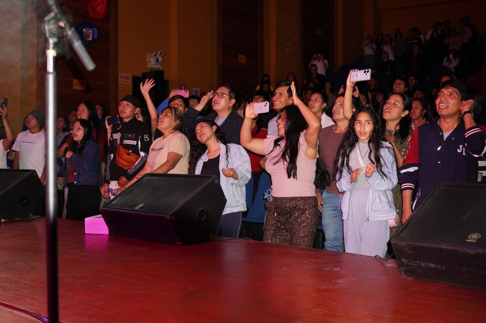
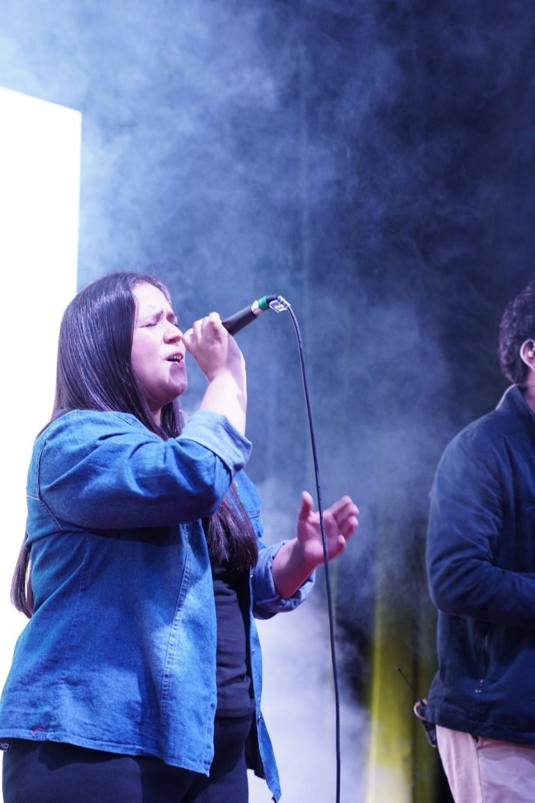
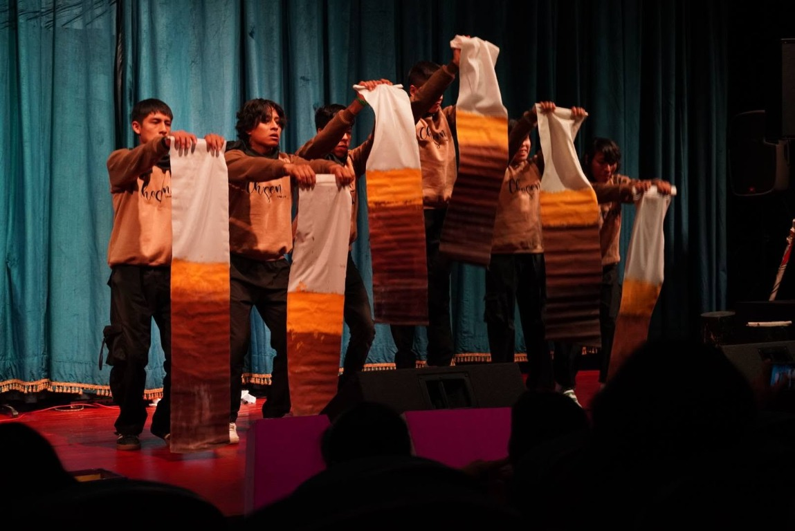
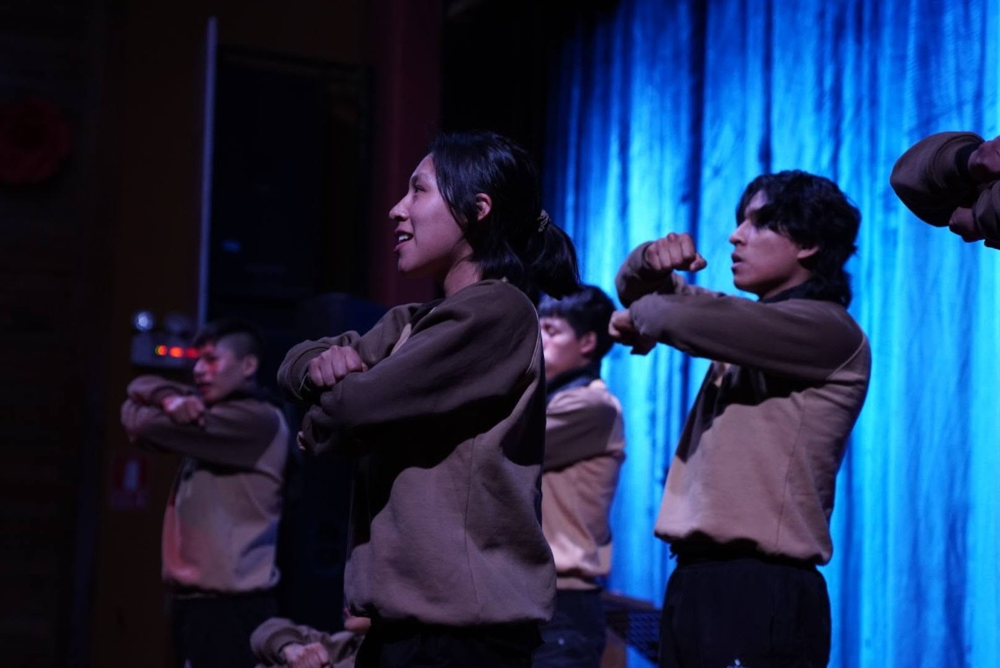
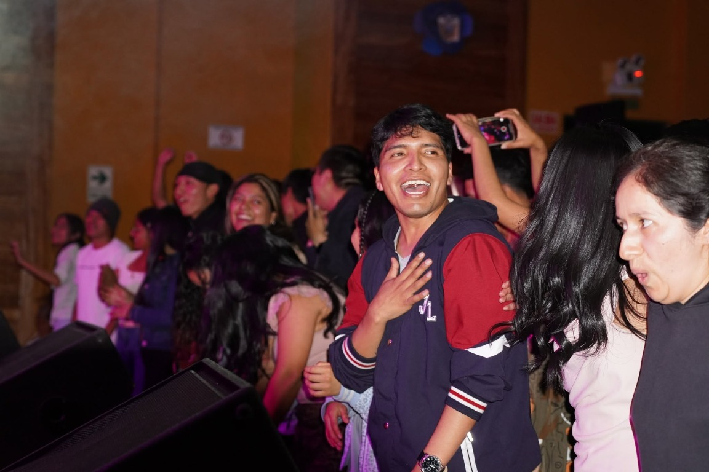
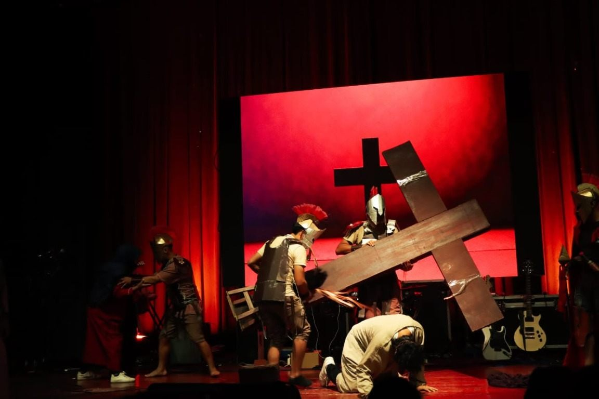

AEV · CADA DICIEMBRE
Adoradores
en Espíritu
y en verdad.
Un encuentro juvenil con música, palabra y unión. Una generación que celebra a Jesús con todo lo que es.
Sigue a AEV
01 / LA EXPERIENCIA
MÁS QUE UN EVENTO
Una noche para recordar.
AEV nace para reunir a jóvenes de Ayacucho en un espacio alegre centrado en Dios. Cada diciembre abrimos las puertas a una experiencia que combina conciertos, sorteos e momentos que nos conectan.
01Conciertos y celebración
02Talleres para crear y aprender
03Sorteos y sorpresas
02 / SONIDO Y MOVIMIENTO
DESDE EL CANAL AEV
Vívelo otra vez.


03 / AEV EN IMÁGENES
Así se vivió
la última edición.
Energía, música y un mismo deseo de adorar.






NOS VEMOS EN DICIEMBRE